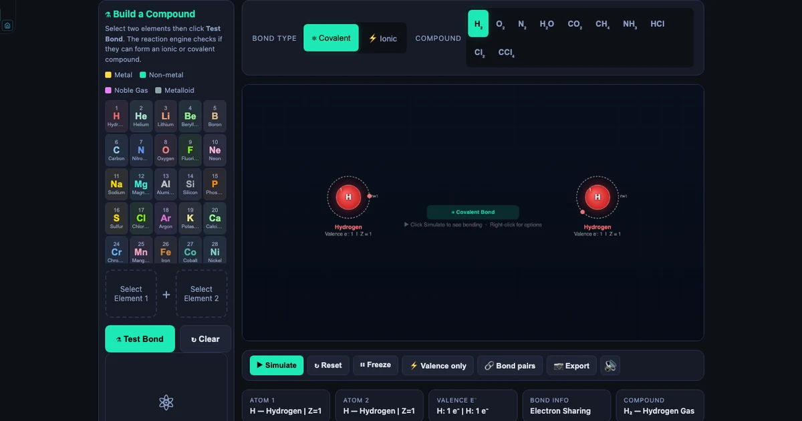
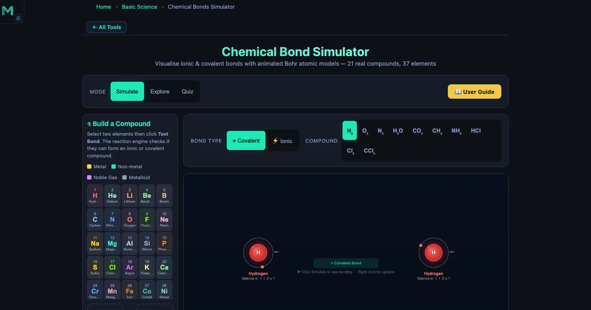
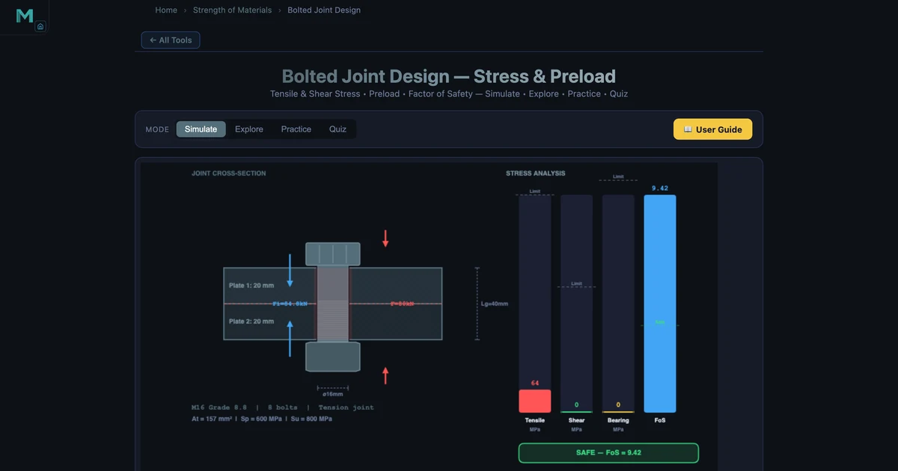
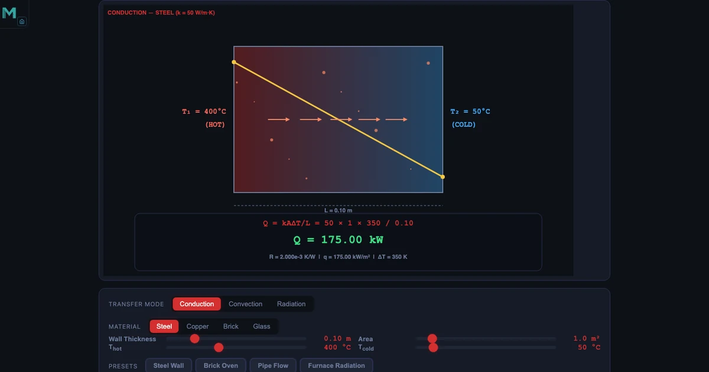
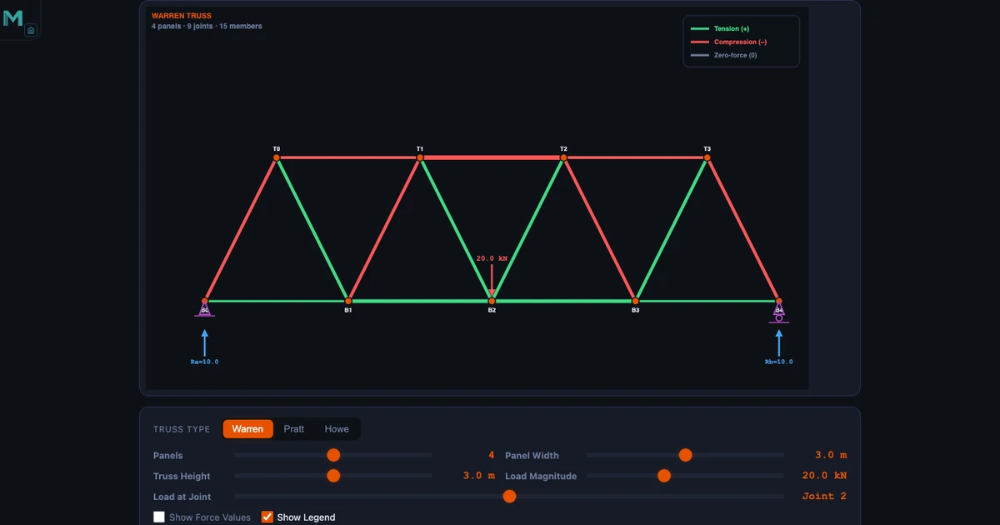
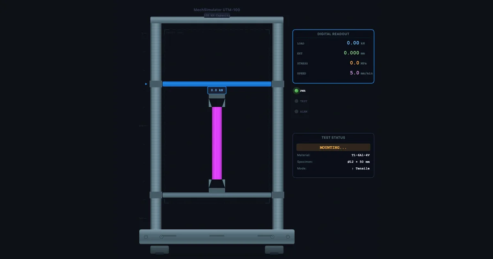
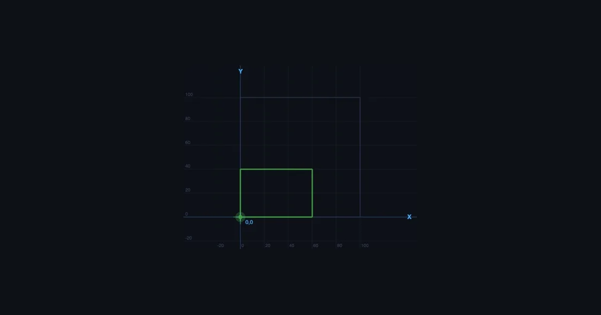
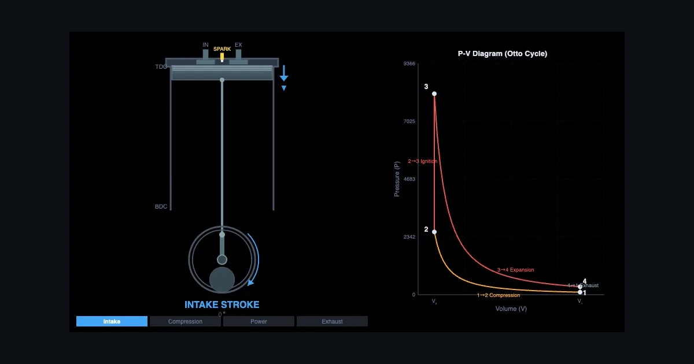

Engineering Education,
Explained Clearly
Practical articles for mechanical engineering instructors and students — simulator walkthroughs, teaching strategies, and concept explainers written by someone who actually stands in front of engineering classes.
0 articles published

Resistor Color Code Calculator — Read 4, 5 & 6-Band Resistors Online
Click colour bands on a live resistor diagram to decode any 3, 4, 5 or 6-band resistor instantly. Reverse lookup, E-series check, tolerance range, temperature coefficient, practice and quiz modes.

Electrical Wiring Simulator — Wire Plugs, Switches & Ring Circuits Online
House wiring trainer with real multicore cables, SWG sizing, live fault detection and 7 example circuits. MCB, RCD, ring vs radial, two-way switching and plug wiring — all in the browser.

How to Draw a Polygon of Forces and Verify Equilibrium — With a Live Free Body Diagram Simulator
Resolution of forces, resultant, force polygon, and Lami's theorem — all with live numbers from the FBD & Force Resolver tool. Four concurrent forces, one closed diagram.

Free Online Engineering Lab Simulators for CTE Students
20+ free browser-based simulators for NIMS, NCCER, and CTE programs — slide calipers, micrometers, PLC ladder logic, CNC G-code, hydraulics. No software, no signup.

How I Teach Four Thermodynamic Cycles Using One Simulator — And Why Students Finally Get It
Carnot, Otto, Diesel, and Brayton cycles with interactive PV diagrams, efficiency formulas, and real worked examples. From classroom to quiz in one browser tab.

How to Design a Riveted Joint: Strength Calculations Every Engineer Should Know
Four failure modes, one efficiency formula, one worked example. Shear, bearing, tearing, and plate edge — the complete step-by-step riveted joint design procedure.

Building Pneumatic Circuits Without Compressed Air: My Simulator-First Approach
Eleven ready-made circuits from direct control to cascade sequencing. Students learn the circuit before they touch the rig — and the lab session transforms.

Why Fatigue Failure Surprises Engineering Students — And How I Fixed That
A shaft running for weeks snaps at a stress below yield — students don’t believe it until they plot the S-N curve. Basquin, Marin factors, Goodman diagram live.

Two Methods, One Simulator: How I Teach LMTD and NTU Side by Side
Counter-flow vs parallel-flow, LMTD when you know all four temperatures, NTU when you don’t — one simulator makes the comparison instant instead of two full calculations.

The Crossover I Didn’t Expect: Teaching Boolean Logic to Mechanical Engineering Students
PLC programs on placement confused every student who hadn’t seen logic gates first. Now I run this simulator before the placement — and the confusion disappears.

How I Teach IC Engine Tests with the Virtual Test Rig Simulator
Six standard procedures — Morse cut-out, variable-load, Willan’s line, heat balance — on one browser rig. No lab booking, no dynamometer required.

Reynolds Number Simulator: Laminar vs Turbulent Flow Regimes
Watch streamlines turn to eddies at Re = 2300. Six fluids from honey to air, live Re = ρvD/μ computation, and Darcy friction factor.

Spring Design Calculator: Wahl Correction Factor and Helical Spring Stiffness
Compute k = Gd&sup4;/(8D³n), spring index, Wahl-corrected shear stress, and deflection. Three materials: spring steel, stainless, phosphor bronze.

DC Motor Simulator: Back EMF, Speed–Torque Curve and Motor Types
Shunt, series, and separately excited DC motors on one canvas — back EMF, armature current, field weakening, and Ward-Leonard speed control.

Build Your Atom: Interactive Bohr Model Simulator Guide
Drag protons, neutrons and electrons to build all 118 elements in real time. Covers isotope stability, ion formation, shell filling, and a step-by-step 40-minute classroom lesson — with Practice and Quiz modes for retrieval practice.

Build Your Atom: Interactive Chemical Bonding Simulator Guide
Select any two of 37 elements, click Test Bond, and watch an animated Bohr model show ionic electron transfer or covalent sharing in real time. A complete guide to use cases, classroom activities, and the science behind every reaction the simulator supports.

Interactive Periodic Table Simulator — Build Your Atom Teaching Guide
37 elements, animated Bohr models, and a Build-a-Compound module where students test any two elements and watch electron transfer or sharing happen live. Covers ΔEN bonding rules, periodic trends, and a structured 20-minute prediction activity.

Stress Concentration Factor Kt — Design Guide
A sharp corner has Kt = ∞; a 0.5 mm fillet drops it to 4–6. Understand how holes, notches, and shoulder fillets amplify stress using Peterson’s curves, and learn the six design remedies that reduce Kt before fatigue cracks form.

Fillet Weld Strength Design — Throat, Stress & FOS
Why is the effective throat t = 0.707 × leg, not the full leg? How does E70xx differ from E90xx in allowable stress? Full worked example: 30 kN transverse fillet, leg = 10 mm, L = 200 mm → τ = 23.6 MPa, FOS = 6.1.

Helical Spring Design — Wahl Factor, Stiffness & Stress
Wire diameter affects stiffness with a fourth-power relationship — double d and k increases 16×. Full design walkthrough: spring index C, Wahl correction factor Kw, shear stress τ, deflection δ, and solid length for compression springs in steel, stainless, and phosphor bronze.

Interactive Simulators for High School Mathematics Teachers
Free browser-based tools for every high school maths topic: graphing functions with live sliders, calculus derivatives as moving tangent slopes, trig through SHM, and matrix multiplication animated cell by cell. Practical lesson plans included.

Cam and Follower Mechanism Design & Engineering Guide
Master cam design from base circle sizing to undercutting avoidance: pressure angle limits (≤30°), motion law comparison (SHM vs cycloidal), roller vs flat-face follower selection, spring return, and CNC manufacturing tolerances — with worked examples.

Four-Bar Linkage Synthesis — Freudenstein’s Equation, Precision Points, and Function Generation
Synthesis is the inverse of analysis: you specify three crank–follower angle pairs and Freudenstein’s equation returns all four link lengths. Covers function generation, path generation, Burmester motion generation, and a full worked example (30/19/92/100 mm Crank-Rocker).

Chemical Bonds Explained — Ionic vs Covalent, Electronegativity, and 21 Compounds Visualised
The ΔEN > 1.7 rule, electron transfer in NaCl, shared pairs in H⊂2;O, polar covalent exceptions like HF — all animated in one simulator. Covers 21 compounds, 37 elements, and the Build-a-Compound mode.

Specific Heat Capacity Calculator — Q = mcΔT, Material Comparison, and Calorimetry
Water heats 10.9× slower than copper for the same energy input. This guide covers the Q = mcΔT formula, all six simulator materials, calorimetry worked examples, latent heat, and real-world applications from engine cooling to coastal climate.

Charles’s Law Simulator — Gas Volume, Temperature, and the V-T Diagram Explained
V⊂1;/T⊂1; = V⊂2;/T⊂2; at constant pressure — but only in Kelvin. This guide covers the most common classroom mistake (using Celsius), how absolute zero was derived, isobaric work, and four simulator modes from animated piston to V-T curve exploration.

Free FESTO FluidSIM Alternative — Simulate Hydraulic, Pneumatic and Electro-Pneumatic Circuits Online
Skip the expensive FluidSIM license. Four free browser-based simulators cover pneumatic circuits, hydraulic topologies, relay ladder logic, and cylinder force calculations — ISO 1219 symbols, animated flow, 30+ pre-built circuits.

Hardness Testing Simulator — Brinell, Rockwell, and Vickers Methods Compared
Master three hardness scales with real formulas and worked examples. Understand when to use Brinell, Rockwell C or B, or Vickers for any material and test situation.

Simple Machines Simulator — Mechanical Advantage, Velocity Ratio, and Efficiency Explained
Explore all six simple machines with interactive simulations. Calculate MA, VR and efficiency for levers, pulleys, inclined planes, screws, wedges and compound machines.

Transformer Simulator — Turns Ratio, Efficiency, and Power Transmission Explained
Understand turns ratio, step-up and step-down design, copper and iron losses, and why high-voltage transmission saves energy — all with real worked examples from the simulator.

Learn Structural Engineering With Simulators — Free Student Guide
Master beams, trusses, Mohr’s circle, column buckling, and pressure vessels with five free interactive simulators — the practical online lab structural engineering students need.

Learn Machine Design With Simulators — Free Student Guide
Master gear trains, shaft torsion, cam mechanisms, belt drives, and bolted joints with five free interactive simulators — practical machine design education with real engineering numbers.

Learn Thermal Engineering With Simulators — Free Student Guide
Master thermodynamic cycles, heat transfer, refrigeration, and gas laws with five free interactive simulators — from Carnot efficiency (η=65% at 1000 K/350 K) to Fourier conduction and Bernoulli flow.

Learn Electrical Engineering With Simulators — Free Student Guide
Master circuits, AC generation, DC motors, RC time constants, and Kirchhoff’s laws with five free interactive simulators — the practical online lab every electrical engineering student needs.

Learn Mechanical Engineering With Simulators — Free Student Guide
Master Newton’s laws, SHM, moment of inertia, friction, and projectile motion with five free interactive simulators — a complete self-study resource for mechanical engineering students.

High School Science Simulators — 5 Free Virtual Labs for Every Classroom
Acid-base testing, chemical bonds, projectile motion, free fall, and gas laws — five free browser-based simulators that turn any science lesson into hands-on discovery without a lab booking or chemical order.

Gyroscopes & Angular Momentum — Interactive Precession Physics Simulator Guide
Master gyroscopic precession and angular momentum with a step-by-step simulator walkthrough. Real numbers: a 2 kg disc spinning at 3000 RPM develops L = 3.14 kg·m²/s — enough to steer a ship.

Torque & Rotational Physics Simulator — From Moments to Rolling Motion
Explore torque, rotational equilibrium, and Newton’s second law for rotation with interactive simulations. See how 120 N at 0.30 m produces 36.0 N·m — and why a sphere rolls faster than a cylinder.

Online Teaching Challenges in Physics Education — How Virtual Labs Fill the Gap
Six real challenges physics instructors face teaching online — and how free simulators for free fall, projectile motion, and Newton’s laws restore the experiment-driven learning that distance delivery loses.

Online Teaching Challenges in Electrical Engineering — Overcome With Virtual Circuit Simulators
Five challenges electrical engineering instructors face online — and how free AC generator, Ohm’s Law, and circuit simulators make Faraday’s law and circuit theory interactive.

Online Teaching Challenges in Mechanical Engineering — How Virtual Labs Solve Each One
Five challenges every mechanical engineering instructor faces online — and how free virtual simulators for moment of inertia, truss analysis, and beam bending solve each one.

Fluid Flow in Pipes — Reynolds Number & Darcy-Weisbach Pressure Drop
Calculate Reynolds number, friction factor, and head loss for water, oil, air, and glycerin in smooth, PVC, steel, and cast iron pipes. Laminar vs turbulent comparison with animated velocity profiles.

Bolted Joint Design Calculator — Preload, Stress & Factor of Safety
Design metric bolted joints under tension, shear, and combined loading. Compute preload, tensile stress, shear stress, and FOS for M6–M24 bolts in grades 4.6 to 12.9.

Flywheel Energy Storage Calculator — Kinetic Energy & Moment of Inertia
Calculate flywheel kinetic energy, moment of inertia, and coefficient of fluctuation for engine, punch press, and wind energy applications with a live turning-moment diagram.

Cam & Follower Displacement and Velocity Calculator
Design cam profiles for SHM, cycloidal, and uniform-acceleration motion laws. Compare peak velocity, acceleration, and pressure angle for engine valve and printing press applications.

Refrigeration Cycle COP Calculator — R-134a, R-410A & More
Simulate the vapour-compression refrigeration cycle for four refrigerants. Calculate COP, compressor power, pressure ratio, and discharge temperature with an animated P-h diagram.

Pressure Vessel Hoop Stress Calculator — Thin-Wall Analysis
Calculate hoop stress, longitudinal stress, and factor of safety for cylindrical and spherical pressure vessels. Instant ASME-style safety assessment with live colour coding.

Newton’s Laws of Motion Simulator — Inertia, F=ma & Action-Reaction
Simulate all three Newton’s laws interactively — inertia on flat and inclined surfaces, F=ma with friction, and cannon-ball recoil for action-reaction.

Hydraulic Circuit Simulator — Meter-In, Regenerative & Sequence Circuits
Explore ten prebuilt hydraulic circuits interactively with animated ISO 1219 flow. Understand meter-in vs meter-out, regenerative speed boost, and sequence valve logic.

Column Buckling Simulator — Euler Formula, Critical Load & Slenderness
See Euler and Johnson column buckling animated in your browser. Change end conditions, materials, and load — watch the verdict flip from SAFE to BUCKLED in real time.

Vibrations Simulator — Spring-Mass-Damper, Damping & Resonance
Tune mass, stiffness, and damping in real time and watch resonance, isolation, and earthquake-damper behaviour emerge live. Covers natural frequency, damping ratio, and magnification factor.

Four-Bar Linkage Simulator — Grashof, Mechanism Types & Coupler Curves
Classify four-bar linkages using Grashof’s criterion and explore Crank-Rocker, Double-Crank, and Double-Rocker mechanisms. Transmission angle and coupler curves update live.

Simple Harmonic Motion Simulator — Period, Frequency & Energy
Visualise spring-mass and pendulum oscillations with live period, frequency, and energy graphs. Confirms T = 2π√(m/k) with real simulator numbers and interactive examples.

Ideal Gas Law Calculator — PV = nRT Simulator & Guide
Solve PV = nRT for pressure, volume, temperature, or moles with a live P-V diagram. Covers Boyle’s, Charles’, and Gay-Lussac’s laws with real worked examples.

Bernoulli’s Principle Simulator — Fluid Speed & Pressure
See how fluid speed and pressure trade off in a Venturi constriction. Covers the full Bernoulli equation, continuity, dynamic pressure, and Reynolds number with live calculations.

Projectile Motion Simulator — Range, Height & Time Calculator
Visualise the parabolic arc of a projectile and compute range, max height, and time of flight for any launch angle, speed, and height. Includes worked examples and a drag comparison.

Hooke’s Law and the Spring Constant — What F = kx Really Means
The spring constant k is the design variable engineers choose — force and extension are just consequences. This guide covers F=kx, series and parallel spring combinations, elastic PE, and the elastic limit with real simulator numbers.

Shaft Torsion Formula — Shear Stress, Angle of Twist, and Why Hollow Shafts Win
The torsion formula T/J = τ/r = Gθ/L does a lot of heavy lifting. Understand why shear stress is zero at the shaft centre, why J depends on D&sup4;, and why removing the core makes a shaft more efficient — not weaker.
Hydraulic Circuit Simulator — Learn Fluid Power Systems Online
A static ISO 1219 schematic on a whiteboard doesn’t flow anywhere. Animated oil particles, a live 4/3 DCV that actually shifts, and ten pre-built circuits from meter-in to regenerative make hydraulics make sense.

Heat Transfer — Conduction, Convection and Radiation Explained
The three modes of heat transfer are invisible by definition. A simulator that animates energy flowing through a wall, sweeping over a surface, and radiating from a hot body makes Fourier’s Law and Newton’s Cooling something you can actually see.

Ohm's Law Simulator — Build DC Circuits Visually
V = IR isn't the hard part — watching current flow is. Drag a battery, drop a resistor, wire it up, and the simulator solves series, parallel, voltage divider and Wheatstone bridge circuits with live meter readings.

Mohr's Circle Explained — Principal Stress Guide
Students memorise the equations and still can't find the principal plane. Mohr's Circle turns the transformation into geometry you can see — principal stresses, max shear, and orientation in one diagram.

Truss Analysis Made Simple — Method of Joints
Two equations per joint, one joint at a time — that's the whole method. The simulator does the arithmetic in real time so students can focus on sign conventions, two-force members, and identifying zero-force members at a glance.
Why Chemistry Simulators Are Transforming High School Science Labs
Watch electrons transfer in real time, test pH with virtual litmus paper, and run every experiment twice — the Chemical Bond Simulator and Litmus Paper Test Virtual Lab make invisible chemistry visible.

Custom Material Testing — UTM Virtual Lab Guide
The preset materials cover the basics. The + Custom button covers everything else — enter seven properties from any datasheet and run a full tensile or compression test in under two minutes.

Universal Testing Machine Virtual Lab — Full Practical Guide
Run tensile and compression tests on five materials, read the stress-strain curve in real time, and extract yield strength, UTS, and Young's modulus — all without lab equipment.

CNC G-Code Simulator Online — Learn G-Code Without a Machine
G-code programming makes instant sense when you can see the tool path animate in real time. Four foundational commands — G00, G01, G02, G03 — cover most of what a student will ever need to write.

Four-Stroke Engine Cycle Explained — Otto, Diesel, and the PV Diagram
Students can recite intake-compression-power-exhaust in their sleep. What trips them up is the PV diagram — and why the loop looks different for Otto vs Diesel. Animation closes that gap instantly.

Gear Ratio Calculator — Understanding Gear Trains Through Animation
The gear ratio formula is straightforward. What's harder is rotation direction and what compound stages do to speed and torque. Watching animated gears mesh resolves both questions immediately.

How to Read a Stress-Strain Curve — UTM Virtual Lab Guide
Half your class can label yield point and UTS on a static diagram. Far fewer can explain what the material is physically doing at each stage. The virtual tensile test makes the difference.

How to Draw Shear Force and Bending Moment Diagrams
SFD and BMD feel harder than they are because students rarely get instant visual feedback on whether their diagram is right. A free beam bending simulator fixes that — here's how to use it for simply supported, cantilever, and overhanging beams.

Why Measuring Instrument Simulators Belong in Every Engineering Classroom
Virtual measuring instruments solve one of the hardest problems in engineering education — building scale-reading fluency before students touch the real bench. Eight free simulators, three learning modes, zero equipment needed.
No articles in this category yet — check back soon.
About the NHIT VisualLab Blog
Teaching mechanical engineering isn't just about equations on a whiteboard. It's about helping students see what's happening inside a material under stress, inside an engine as it cycles, inside a hydraulic system as pressure builds. That's exactly what this blog is for.
Every article here connects theory to the interactive simulators on NHIT VisualLab — 89 free tools covering everything from vernier caliper reading to beam bending analysis to four-stroke engine cycles. Articles are written from classroom experience, not copied from textbooks.
What You'll Find Here
- Simulator guides — step-by-step walkthroughs of specific tools and how to use them in lessons
- Concept explainers — the engineering theory behind what you see on screen, in plain language
- Teaching strategies — how to structure sessions, set practice exercises, and run quiz assessments
- Lab activity ideas — virtual alternatives to physical lab sessions for resource-limited settings
Who This Is For
Primarily mechanical engineering and TVET instructors who want ready-to-use digital tools and the theory to back them up. Also useful for engineering diploma students revising core topics, or anyone who learns better by experimenting than by reading a formula and hoping for the best.
Explore the Simulators
Each article links directly to the relevant simulators. Browse all 89 tools by category: Material Testing, Measuring Instruments, Mechanics & Motion, Mechanisms, Strength of Materials, Thermal Engineering, Electrical & Electronics, and Workshop Practice.